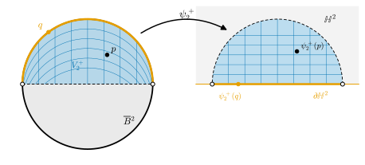

11.5 Manifolds with Boundary
Goals
- closed upper half-space \(\mathbb{H}^n\)을 모형으로 하는 topological manifold with boundary와 smooth manifold를 정의하고, \([0, 1]\)과 closed ball \(\overline{B}{}^n\)에 chart를 줄 수 있다.
- interior point와 boundary point를 정의하고, smooth한 경우 두 종류가 겹치지 않음을 inverse function theorem으로 증명할 수 있다(topological한 경우는 진술만 한다).
- \(\partial M\)이 \((n-1)\)-dimensional smooth manifold임을 보이고, manifold의 경계와 부분집합의 topological boundary를 구별할 수 있다.
Prerequisites
- Definition 11.1.3 (topological manifold), Theorem 11.1.12 (topological invariance of dimension), Non-example 11.1.11 (십자 모양)
- Definition 11.2.1 (smooth compatibility), Definition 11.2.9 (smooth structure), Proposition 11.2.10
- Example 11.3.4 (hemisphere charts), Theorem 11.3.6
- Theorem 2.2.1 (chain rule), Theorem 2.3.5 (inverse function theorem)
Motivation
Non-example 11.4.6(b)에서 \([0, 1)\)이 \(\R\)의 open submanifold가 아님을 보았다. 실은 \([0, 1)\)은 어떤 dimension의 topological manifold도 아니다(Non-example 11.5.3). endpoint \(0\)의 neighborhood는 \([0, \varepsilon)\)처럼 한쪽으로만 뻗고, 이것은 \(\R\)의 열린구간과 homeomorphic이 될 수 없다. 닫힌 disk의 가장자리 점, 닫힌 hemisphere의 적도 위의 점도 마찬가지다.
그런데 이런 공간은 버릴 수 없다. Chapter 10의 Gauss–Bonnet theorem은 surface 위의 경계가 있는 영역에 대한 정리이고, 미적분학의 기본정리 \(\int_a^b f' = f(b) - f(a)\)는 구간 \([a, b]\)와 그 endpoint 사이의 관계다. 이런 정리를 manifold 위에서 하나로 모으는 Stokes's theorem은 Chapter 18에서 다루는데, 그곳의 무대가 바로 이 절에서 정의하는 “경계를 갖는 manifold”다. 해결책은 간단하다. 모형 공간을 \(\R^n\)에서 closed upper half-space로 바꾸면 된다.

The Closed Upper Half-Space and Topological Manifolds with Boundary
\(n \ge 1\)일 때 \(\R^n\)의 subspace
을 closed upper half-space(상반공간)이라 한다. \(\partial\mathbb{H}^n = \{x \in \R^n : x^n = 0\}\), \(\operatorname{Int}\mathbb{H}^n = \{x \in \R^n : x^n \gt 0\}\)으로 쓴다. \(\mathbb{H}^1 = [0, \infty)\)이다. \(\mathbb{H}^n\)은 hyperbolic space의 upper half-space model \(\mathbb{U}^n = \{x^n \gt 0\}\)(Chapter 21)과 다른 대상이다. \(\mathbb{H}^n\)의 open set은 subspace topology의 open set, 즉 \(\R^n\)의 open set \(O\)에 대해 \(O \cap \mathbb{H}^n\) 꼴의 집합이다(Definition 3.3.1). 예를 들어 \([0, 1) = (-1, 1) \cap \mathbb{H}^1\)은 \(\mathbb{H}^1\)에서 열려 있지만 \(\R\)에서는 열려 있지 않다.
Definition 11.5.1 (topological manifold with boundary). \(n \ge 1\)이라 하자. Hausdorff이고 second countable인 topological space \(M\)의 모든 점이 \(\mathbb{H}^n\)의 open set과 homeomorphic인 neighborhood를 가지면, \(M\)을 \(n\)-dimensional topological manifold with boundary(경계를 갖는 위상다양체)라 한다. \(M\)의 open set \(U\)와, \(U\)에서 \(\mathbb{H}^n\)의 open set 또는 \(\R^n\)의 open set 위로 가는 homeomorphism \(\varphi\)의 짝 \((U, \varphi)\)를 \(M\)의 chart라 한다. \(\varphi(U)\)가 \(\R^n\)의 open set이면 interior chart(내부 차트), \(\varphi(U)\)가 \(\mathbb{H}^n\)의 open set이고 \(\varphi(U) \cap \partial\mathbb{H}^n \ne \varnothing\)이면 boundary chart(경계 차트)라 한다.
\(\R^n\)의 open ball은 translation하면 \(\operatorname{Int}\mathbb{H}^n\) 안에 들어가므로 \(\mathbb{H}^n\)의 open set과 homeomorphic이다. 그래서 topological manifold(Definition 11.1.3)는 topological manifold with boundary이기도 하다. “경계를 갖는”은 경계가 있어도 된다는 뜻이지 반드시 있다는 뜻이 아니다. 앞으로 그냥 “manifold”라고 하면 지금까지처럼 경계가 없는 것을 뜻한다.
Example 11.5.2 (topological manifold with boundary). (a) \(\mathbb{H}^n\) 자신. \((\mathbb{H}^n, \id)\)는 boundary chart다.
(b) 닫힌 구간 \([0, 1]\). \(\R\)의 subspace이므로 Hausdorff이고 second countable이다. 세 chart \(((0, 1), \id)\)(interior chart), \(\psi_0\colon [0, 1) \to [0, 1)\), \(\psi_0(x) = x\)와 \(\psi_1\colon (0, 1] \to [0, 1)\), \(\psi_1(x) = 1 - x\)(boundary chart)가 \([0, 1]\)을 덮는다. \([0, 1)\)은 \(\mathbb{H}^1\)의 open set이다. \(\psi_0\)과 \(\psi_1\)은 endpoint \(0\)과 \(1\)을 각각 \(\partial\mathbb{H}^1 = \{0\}\)으로 보낸다.
(c) closed ball \(\overline{B}{}^n = \{x \in \R^n : \abs{x} \le 1\}\). chart는 Example 11.5.13에서 구체적으로 만든다.
Non-example 11.5.3. (a) \([0, 1)\)은 (경계가 없는) topological manifold가 아니다. \([0, 1)\)이 topological \(n\)-manifold라면 open subset \((0, 1)\)도 topological \(n\)-manifold인데(Proposition 11.1.5(a)), \((0, 1)\)은 \(\R\)과 homeomorphic인 1-dimensional manifold이므로 Theorem 11.1.12에 의해 \(n = 1\)이다. \(0\)의 neighborhood \(W\)와 homeomorphism \(h\colon W \to \hat W \subseteq \R\) (\(\hat W\) 열림)이 있다고 하자. \(W\)는 어떤 \([0, \varepsilon)\)을 포함하고, \([0, \varepsilon)\)은 \(W\)에서 열려 있으므로 \(h([0, \varepsilon))\)은 \(\R\)의 open set이며 연결이다(Proposition 3.7.5). 따라서 \(c = h(0)\)을 포함하는 열린구간 \(I\)다(Theorem 3.7.4). 그러면 \(h\)는 연결인 \((0, \varepsilon)\)을 연결이 아닌 \(I \setminus \{c\}\) 위로 보내는 homeomorphism이 되어 모순이다. 반면 \([0, 1)\)은 chart \(\id\colon [0, 1) \to [0, 1) \subseteq \mathbb{H}^1\) 하나로 덮이는 topological manifold with boundary다.
(b) 십자 \(X = \{xy = 0\}\)은 topological manifold with boundary도 아니다. Non-example 11.1.11의 논증에서 \(\R^n\)의 공 대신 \(\mathbb{H}^n\)의 “half-ball” \(B_\delta(c) \cap \mathbb{H}^n\)을 쓰면 된다. half-ball은 convex하고 \(n \ge 2\)이면 한 직선 안에 들어가지 않으므로, 한 점을 빼도 Non-example 11.1.11과 같은 우회 path로 path-connected다. \(n = 1\)에서 \(c = 0\)이면 \([0, \delta) \setminus \{0\}\)은 구간 하나이고, \(c \gt 0\)이면 \(\delta \le c\)로 잡아 half-ball이 열린구간 \((c - \delta, c + \delta)\)가 되므로 한 점을 빼면 구간 두 개다. 어느 경우든 한 점을 뺀 half-ball은 많아야 두 조각이므로, 원점을 빼면 네 조각이 되는 \(X\)와 모순이다.
Verification: verify/v-11-5-manifolds-with-boundary.py (half-ball 안의 우회 path)
Interior Points and Boundary Points
Definition 11.5.4 (interior point and boundary point). \(M\)이 경계를 갖는 topological \(n\)-manifold라 하자. 점 \(p \in M\)이 어떤 interior chart의 정의역에 들어 있으면 \(p\)를 \(M\)의 interior point(내부점)이라 한다. \(p\)를 \(\partial\mathbb{H}^n\)으로 보내는 boundary chart가 있으면 \(p\)를 \(M\)의 boundary point(경계점)이라 한다. interior point 전체를 \(\operatorname{Int} M\), boundary point 전체를 \(\partial M\)으로 쓰고 \(\partial M\)을 \(M\)의 boundary(경계)라 한다.
Lemma 11.5.5. topological manifold with boundary의 모든 점은 interior point이거나 boundary point다. 또 \(p\)를 \(\operatorname{Int}\mathbb{H}^n\)으로 보내는 chart \((V, \psi)\)가 있으면 \(p\)는 interior point다.
Proof. 뒤의 주장부터 보이자. \(\psi(V)\)가 \(\R^n\)에서 열려 있으면 \((V, \psi)\)가 interior chart다. \(\psi(V) = O \cap \mathbb{H}^n\) (\(O\)는 \(\R^n\)에서 열림)이면 \(V' = \psi^{-1}(\operatorname{Int}\mathbb{H}^n)\)은 \(p\)를 포함하는 \(V\)의 open set이고, \(\psi(V') = O \cap \operatorname{Int}\mathbb{H}^n\)은 \(\R^n\)의 두 open set의 교집합이므로 열려 있다. 따라서 \((V', \psi|_{V'})\)는 \(p\)를 포함하는 interior chart다. 앞의 주장: \(p\) 둘레의 chart \((U, \varphi)\)가 있다. \(\varphi(p) \in \operatorname{Int}\mathbb{H}^n\)이거나 \(\varphi(U)\)가 \(\R^n\)에서 열려 있으면 \(p\)는 interior point다. 그렇지 않으면 \(\varphi(U)\)는 \(\mathbb{H}^n\)의 open set이고 \(\varphi(p) \in \partial\mathbb{H}^n\)이므로 \((U, \varphi)\)는 \(p\)를 \(\partial\mathbb{H}^n\)으로 보내는 boundary chart이고, \(p\)는 boundary point다.
그러면 한 점이 interior point이면서 동시에 boundary point일 수 있을까? 어떤 chart로는 \(\R^n\)의 open set 안쪽에 있는 것처럼 보이고, 다른 chart로는 \(\mathbb{H}^n\)의 바닥에 있는 것처럼 보이는 점이 있다면 “경계”라는 말은 chart에 따라 달라진다. 그런 일은 없다는 것이 다음 정리다.
Theorem 11.5.6 (topological invariance of the boundary). topological manifold with boundary \(M\)에서 interior point이면서 boundary point인 점은 없다. 따라서 \(M = \operatorname{Int} M \cup \partial M\)이고 \(\operatorname{Int} M \cap \partial M = \varnothing\)이다.
이 정리가 말하는 것. 한 점이 경계에 있는지는 chart를 어떻게 고르든 같다. 경계는 공간 자신의 성질이다.
증명에 대하여. 이 정리는 “\(\R^n\)의 open set에서 \(\R^n\)으로 가는 연속 injective는 open map이다”라는 Brouwer의 invariance of domain theorem에서 나온다. invariance of domain의 증명에는 homology 같은 algebraic topology가 필요하다. 이 도구는 이 study set이 다루는 범위를 넘으므로 Theorem 11.1.12와 마찬가지로 진술만 하고 증명은 참고문헌으로 돌린다 [Lee-ITM], [Lee-ISM Ch. 1]. \(n = 1\)인 경우는 connectedness만으로 증명할 수 있다(Exercise 11.5.5). smooth manifold에서는 inverse function theorem으로 같은 결론을 완전히 증명한다(Theorem 11.5.11). 이 study set의 뒤 장은 smooth한 경우만 쓴다.
Smooth Manifolds with Boundary
boundary chart 사이의 transition map은 \(\mathbb{H}^n\)의 open set, 예를 들어 \([0, 1)\)에서 정의된다. 이런 집합은 \(\R^n\)에서 열려 있지 않으므로 Definition 2.2.11의 partial derivative를 바닥의 점에서 그대로 쓸 수 없다. 그래서 smoothness의 뜻을 넓힌다. 요지는 “open set으로 매끄럽게 확장된다”이다.
Definition 11.5.7 (임의의 부분집합에서 정의된 map의 smoothness). \(A \subseteq \R^n\)이 임의의 부분집합이고 \(F\colon A \to \R^k\)라 하자. 모든 \(a \in A\)에 대하여 \(a\)를 포함하는 \(\R^n\)의 open set \(W\)와 smooth map \(\tilde F\colon W \to \R^k\)(Definition 2.2.11)가 있어서 \(W \cap A\) 위에서 \(\tilde F = F\)이면, \(F\)가 smooth(매끄러운) map이라 한다. \(\tilde F\)를 \(a\) 근처에서의 \(F\)의 smooth 확장이라 한다.
이것이 같은 이름을 쓸 자격이 있는지, 즉 open set에서는 원래 정의와 같은지 확인하자.
Proposition 11.5.8 (넓힌 정의의 성질).
- (a) \(A \subseteq \R^n\)이 open set이면, \(F\colon A \to \R^k\)가 Definition 11.5.7의 뜻으로 매끄러울 필요충분조건은 Definition 2.2.11의 뜻으로 smooth한 것이다.
- (b) \(F\colon A \to \R^k\)와 \(G\colon B \to \R^l\)이 Definition 11.5.7의 뜻으로 매끄럽고 \(F(A) \subseteq B\)이면 \(G \circ F\)도 매끄럽다.
- (c) \(A\)의 모든 점이 \(F\)를 \(A \cap W'\) (\(W'\)은 \(\R^n\)의 open set)로 제한한 것이 smooth한 neighborhood \(W'\)을 가지면 \(F\)는 매끄럽다.
Proof. (a) Definition 2.2.11의 뜻으로 매끄러우면 \(W = A\), \(\tilde F = F\)로 두면 된다. 거꾸로 \(a \in A\)마다 확장 \(\tilde F\colon W \to \R^k\)가 있으면, open set \(W \cap A\) 위에서 \(F = \tilde F\)이므로 \(F\)는 \(a\)의 열린 neighborhood \(W \cap A\)에서 매끄럽다. smoothness는 국소적인 성질이므로(Proposition 11.2.10의 증명 첫 문단) \(F\)는 \(A\)에서 매끄럽다. (b) \(a \in A\)라 하자. \(G\)의 \(F(a)\) 근처 확장 \(\tilde G\colon W' \to \R^l\)과 \(F\)의 \(a\) 근처 확장 \(\tilde F\colon W \to \R^k\)를 잡는다. \(\tilde F\)는 연속이므로 \(W_0 = W \cap \tilde F^{-1}(W')\)은 \(a\)를 포함하는 open set이다. \(x \in W_0 \cap A\)이면 \(\tilde F(x) = F(x) \in B \cap W'\)이므로 \(\tilde G(\tilde F(x)) = G(F(x))\)이다. 따라서 \(\tilde G \circ \tilde F\colon W_0 \to \R^l\)(Proposition 2.2.12(b)에 의해 smoothness)이 \(G \circ F\)의 확장이다. (c) \(a \in A\)이고 \(W'\)이 가정의 neighborhood라 하자. \(F|_{A \cap W'}\)의 \(a\) 근처 확장 \(\tilde F\colon W \to \R^k\)를 \(W \cap W'\)으로 제한하면, \((W \cap W') \cap A\) 위에서 \(\tilde F = F\)이다. 즉 이것이 \(a\) 근처에서의 \(F\)의 smooth 확장이다. Definition 11.5.7의 조건은 점마다의 조건이므로 \(F\)는 매끄럽다.
이제 Section 11.2의 정의를 글자 그대로 되풀이한다. 달라지는 것은 transition map의 정의역이 \(\mathbb{H}^n\)의 open set일 수 있다는 것과, 그때의 smoothness를 Definition 11.5.7의 뜻으로 읽는다는 것뿐이다.
Definition 11.5.9 (smooth manifold with boundary). \(M\)이 경계를 갖는 topological \(n\)-manifold라 하자. 두 chart \((U, \varphi)\), \((V, \psi)\)는 \(U \cap V = \varnothing\)이거나 두 transition map \(\psi \circ \varphi^{-1}\), \(\varphi \circ \psi^{-1}\)이 모두 Definition 11.5.7의 뜻으로 매끄러울 때 smoothly compatible이라고 한다. smooth atlas, maximal atlas, smooth structure는 Definition 11.2.5, Definition 11.2.8, Definition 11.2.9와 같은 말로 정의한다. smooth structure를 준 \(M\)을 \(n\)-dimensional smooth manifold with boundary(경계를 갖는 smooth한 다양체)라 한다.
Remark 11.5.10 (Section 11.2의 결과는 그대로 성립한다). Proposition 11.2.10과 Proposition 11.2.14(a)의 증명이 쓴 것은 smoothness의 국소성, 합성의 smoothness, smooth map의 제한이 매끄럽다는 것뿐이다. 세 가지 모두 넓힌 정의에서도 성립하므로(Proposition 11.5.8(b), (c), 그리고 확장을 그대로 쓰면 되는 제한), 경계를 갖는 경우에도 smooth atlas는 smooth structure를 꼭 하나 정하고 smooth chart는 open set으로 줄여도 smooth chart다. interior point와 boundary point는 이제 smooth chart로 정의한다. Lemma 11.5.5의 증명에서 chart를 줄인 것은 여전히 smooth chart이므로, 모든 점은 smooth chart의 뜻으로 interior point이거나 boundary point다.
smooth한 경우에는 경계의 invariance를 완전히 증명할 수 있다. 핵심은 inverse function theorem이다. interior chart에서 boundary chart로 가는 transition map의 total derivative가 invertible이면, 그 transition map은 open set을 open set으로 보내야 한다. 그런데 \(\partial\mathbb{H}^n\)의 점의 열린 neighborhood는 \(\mathbb{H}^n\)에 들어가지 않는다.
Theorem 11.5.11 (smooth invariance of the boundary). \(M\)이 경계를 갖는 smooth \(n\)-manifold이고 \(p \in M\)이 어떤 smooth interior chart의 정의역에 들어 있으면, \(p\)를 \(\partial\mathbb{H}^n\)으로 보내는 smooth boundary chart는 없다. 따라서 smooth chart로 정의한 \(\operatorname{Int} M\)과 \(\partial M\)은 서로소이고 합집합이 \(M\)이다.
이 정리가 말하는 것. smooth manifold에서는 경계가 smooth chart의 선택에 무관하다. 증명에는 algebraic topology의 무거운 정리 대신 Chapter 2의 inverse function theorem만 쓴다.
Proof idea: interior chart \(\varphi\)와 boundary chart \(\psi\)가 모두 \(p\)를 덮는다고 하자. \(\eta = \psi \circ \varphi^{-1}\)은 \(\R^n\)의 open set에서 정의되고, 그 역의 smooth 확장과 chain rule로 \(D\eta\)가 invertible임을 안다. inverse function theorem에 의해 \(\eta\)의 image는 \(\psi(p)\)의 \(\R^n\) 속 열린 neighborhood를 포함해야 하는데, \(\psi(p) \in \partial\mathbb{H}^n\)이면 그 neighborhood는 \(\mathbb{H}^n\)을 벗어난다.
Proof. \((U, \varphi)\)가 \(p\)를 포함하는 smooth interior chart이고, \((V, \psi)\)가 \(\psi(p) \in \partial\mathbb{H}^n\)인 smooth boundary chart라 가정하고 모순을 이끌어 내자. \(U_0 = U \cap V\)라 하고 \(a = \varphi(p)\), \(b = \psi(p)\)라 두자.
- 두 transition map. \(\varphi(U_0)\)는 \(\R^n\)의 open set \(\varphi(U)\)의 open subset이므로 \(\R^n\)에서 열려 있고, \(\psi(U_0)\)는 \(\mathbb{H}^n\)의 open set이다. \(\eta = \psi \circ \varphi^{-1}\colon \varphi(U_0) \to \psi(U_0)\)는 open set에서 정의되었으므로 Proposition 11.5.8(a)에 의해 보통의 뜻으로 매끄럽다. 역 \(\tau = \varphi \circ \psi^{-1}\colon \psi(U_0) \to \varphi(U_0)\)은 Definition 11.5.7의 뜻으로 매끄러우므로, \(b\)를 포함하는 \(\R^n\)의 open set \(W\)와 smooth \(\tilde\tau\colon W \to \R^n\)이 있어서 \(W \cap \psi(U_0)\) 위에서 \(\tilde\tau = \tau\)이다.
- \(D\eta(a)\)는 invertible이다. \(O = \eta^{-1}(W)\)는 \(\eta\)가 연속이므로 \(a\)를 포함하는 \(\R^n\)의 open set이다. \(x \in O\)이면 \(\eta(x) \in W \cap \psi(U_0)\)이므로 \(\tilde\tau(\eta(x)) = \tau(\eta(x)) = x\)이다. 즉 open set \(O\) 위에서 \(\tilde\tau \circ \eta = \id\)이다. chain rule(Theorem 2.2.1)로 \(a\)에서 미분하면 \(D\tilde\tau(b)\,D\eta(a) = \id_{\R^n}\)이다(Proposition 2.3.4의 증명과 같은 계산). \(n \times n\) 행렬 \(D\eta(a)\)가 왼쪽 역을 가지므로 \(\det D\tilde\tau(b) \cdot \det D\eta(a) = 1\)이고, \(\det D\eta(a) \ne 0\)이다.
- inverse function theorem. Theorem 2.3.5를 \(O\) 위의 smooth map \(\eta\)에 쓰면, \(a\)를 포함하는 open set \(U_1 \subseteq O\)와 \(b\)를 포함하는 \(\R^n\)의 open set \(V_1\)이 있어서 \(\eta(U_1) = V_1\)이다. 그런데 \(\eta\)의 값은 \(\psi(U_0) \subseteq \mathbb{H}^n\)에 있으므로 \(V_1 \subseteq \mathbb{H}^n\)이다.
- 모순. \(V_1\)은 \(\R^n\)에서 열려 있으므로 어떤 \(\varepsilon \gt 0\)에 대해 \(B_\varepsilon(b) \subseteq V_1\)이다. \(b^n = 0\)이므로 점 \(b - \tfrac{\varepsilon}{2}e_n\)은 \(B_\varepsilon(b)\)에 있고 \(n\)번째 성분이 \(-\varepsilon/2 \lt 0\)이어서 \(\mathbb{H}^n\)에 있지 않다. 이것은 \(V_1 \subseteq \mathbb{H}^n\)과 모순이다.
따라서 smooth interior chart에 들어 있는 점은 smooth boundary point가 아니다. Remark 11.5.10에 의해 모든 점은 둘 중 하나이므로 \(M = \operatorname{Int} M \cup \partial M\)은 서로소인 합집합이다.
Proposition 11.5.12 (interior와 boundary의 구조). \(M\)이 경계를 갖는 smooth \(n\)-manifold라 하자.
- (a) \(\operatorname{Int} M\)은 \(M\)의 open set이고, smooth interior chart들로 \(n\)-dimensional (경계가 없는) smooth manifold가 된다.
- (b) \(\partial M\)은 \(M\)의 closed set이다. smooth boundary chart \((V, \psi)\)마다 \(V \cap \partial M = \psi^{-1}(\partial\mathbb{H}^n)\)이고, \(\hat\psi = \mathrm{pr} \circ \psi|_{V \cap \partial M}\) (\(\mathrm{pr}(x^1, \dots, x^n) = (x^1, \dots, x^{n-1})\))들의 모임은 \(\partial M\)의 smooth atlas다. 따라서 \(\partial M\)은 \((n-1)\)-dimensional smooth manifold다.
Proof. (a) interior chart의 정의역의 점은 모두 interior point이므로 \(\operatorname{Int} M\)은 smooth interior chart의 정의역들의 합집합이고, 따라서 열려 있다. subspace이므로 Hausdorff이고 second countable이며, smooth interior chart들은 \(\operatorname{Int} M\)을 덮는다. 이 chart들의 transition map은 \(\R^n\)의 open set 사이의 map이므로 Proposition 11.5.8(a)에 의해 보통의 뜻으로 diffeomorphism이다. 따라서 smooth atlas이고 smooth structure를 정한다.
(b) Theorem 11.5.11에 의해 \(\partial M = M \setminus \operatorname{Int} M\)이므로 닫혀 있다. \((V, \psi)\)가 smooth boundary chart이고 \(q \in V\)라 하자. \(\psi(q) \in \partial\mathbb{H}^n\)이면 정의에 의해 \(q \in \partial M\)이다. \(\psi(q) \in \operatorname{Int}\mathbb{H}^n\)이면 Lemma 11.5.5(와 Remark 11.5.10)에 의해 \(q\)는 interior point이므로 Theorem 11.5.11에 의해 \(q \notin \partial M\)이다. 따라서 \(V \cap \partial M = \psi^{-1}(\partial\mathbb{H}^n)\)이다.
chart. \(\psi(V) = O \cap \mathbb{H}^n\) (\(O\)는 \(\R^n\)에서 열림)라 하고 \(\iota(y) = (y, 0)\)이라 하자. \(\hat\psi\)는 \(V \cap \partial M\)에서 \(\iota^{-1}(O) = \{y \in \R^{n-1} : (y, 0) \in O\}\) 위로 가는 bijective다. 이 집합은 continuous map \(\iota\)에 의한 open set의 preimage이므로 \(\R^{n-1}\)에서 열려 있다. \(\hat\psi\)는 연속이고 inverse map \(y \mapsto \psi^{-1}(y, 0)\)도 연속이므로 homeomorphism이다. \(\partial M\)은 \(M\)의 subspace이므로 Hausdorff이고 second countable이다. 따라서 \(\partial M\)은 topological \((n-1)\)-manifold다. (\(n = 1\)이면 \(\R^0\)은 한 점이고, \(\partial M\)은 discrete space다.)
transition map. \((V, \psi)\), \((V', \psi')\)이 smooth boundary chart라 하자. \(y \in \hat\psi(V \cap V' \cap \partial M)\)이면 \(\psi^{-1}(y, 0) \in \partial M\)이므로 \(\psi'(\psi^{-1}(y, 0)) \in \partial\mathbb{H}^n\)이고, \(\hat\psi' \circ \hat\psi^{-1}(y) = \mathrm{pr}\big(\psi' \circ \psi^{-1}(y, 0)\big)\)이다. \(\psi' \circ \psi^{-1}\)은 \((y, 0)\) 근처에서 smooth 확장 \(\tilde\tau\colon W \to \R^n\)을 가지므로, open set \(\iota^{-1}(W)\) 위에서 \(\mathrm{pr} \circ \tilde\tau \circ \iota\)는 매끄럽고 \(\hat\psi' \circ \hat\psi^{-1}\)과 같다. smoothness는 국소적이므로 \(\hat\psi' \circ \hat\psi^{-1}\)은 매끄럽고, 같은 논증으로 역방향도 매끄럽다. 따라서 \(\{\hat\psi\}\)는 \(\partial M\)의 smooth atlas다.
\(\partial M\)은 경계가 없는 manifold다. 즉 \(\partial(\partial M) = \varnothing\)이다. \(\partial M\)의 구조가 \(M\)의 submanifold 구조라는 것은 Chapter 14의 언어로 다시 볼 수 있다.
A Computation: The Closed Ball
closed ball에 boundary chart를 구체적으로 주자. 처음 하는 계산이므로 단계를 모두 쓴다. 아이디어는 Example 11.3.4의 hemisphere charts와 같다. 한 좌표를 “경계 sphere까지 남은 거리”로 바꾼다.
Example 11.5.13 (closed ball \(\overline{B}{}^n\)). \(n \ge 1\)이고 \(M = \overline{B}{}^n = \{x \in \R^n : \abs{x} \le 1\}\)이라 하자. \(\R^n\)의 subspace이므로 Hausdorff이고 second countable이다.
- interior chart. open ball \(B^n = B_1(0)\)은 \(M\)에서 열려 있고 \((B^n, \id)\)는 interior chart다.
- boundary chart. \(i = 1, \dots, n\)과 부호 \(\pm\)에 대해 \(V_i^\pm = \{x \in M : \pm x^i \gt 0\}\)이라 하자(\(M\)에서 열림). \(x \in V_i^\pm\)의 \(i\)번째 성분을 뺀 것을 \(y = (x^1, \dots, \widehat{x^i}, \dots, x^n) \in \R^{n-1}\)이라 하면 \(\abs{y}^2 = \abs{x}^2 - (x^i)^2 \lt 1\)이다. 이제
로 두자. 마지막 좌표 \(t = \sqrt{1 - \abs{y}^2} \mp x^i\)를 조사한다. \(\abs{x} \le 1\)이므로 \((x^i)^2 \le 1 - \abs{y}^2\), 즉 \(\pm x^i \le \sqrt{1 - \abs{y}^2}\)이고 따라서 \(t \ge 0\)이다. 등호는 \(\pm x^i = \sqrt{1 - \abs{y}^2}\), 즉 \(\abs{x} = 1\)일 때만 성립한다. 또 \(\pm x^i \gt 0\)은 \(t \lt \sqrt{1 - \abs{y}^2}\)과 같다. 그러므로 \(\psi_i^\pm\)는 \(V_i^\pm\)에서
위로 가는 bijective이고 inverse map이 (11.5.2)의 둘째 식이다. \(D\)는 \(\mathbb{H}^n\)과 \(\R^n\)의 open set \(\{\abs{y} \lt 1,\ t \lt \sqrt{1 - \abs{y}^2}\}\)의 교집합이므로 \(\mathbb{H}^n\)에서 열려 있고 \(\partial\mathbb{H}^n\)과 만난다. 두 map은 성분이 연속이므로 \(\psi_i^\pm\)는 homeomorphism, 즉 boundary chart다. \(\abs{x} = 1\)인 점은 어떤 성분이 \(0\)이 아니므로 어떤 \(V_i^\pm\)에 들어 있고, \(\abs{x} \lt 1\)인 점은 \(B^n\)에 들어 있다. 따라서 이 \(2n + 1\)개의 chart가 \(M\)을 덮는다. \(n = 1\)이면 \(y\)는 없고 \(\psi_1^+(x) = 1 - x\), \(\psi_1^-(x) = 1 + x\)이다(Example 11.5.2(b)의 endpoint chart와 같은 꼴).
smooth compatibility. (11.5.2)의 두 식은 각각 \(\R^n\)의 open set \(\{x : \abs{y} \lt 1\}\)과 \(\{(y, t) : \abs{y} \lt 1\}\)에서 정의된 smooth map을 제한한 것이다(\(\sqrt{\ }\)는 \((0, \infty)\)에서 매끄럽다). 그러므로 이 chart들 사이의 transition map은 모두 open set에서 정의된 smooth map들의 합성을 제한한 것이고, 그 합성 자체가 smooth 확장이 된다(Proposition 11.5.8(b)). 예를 들어 \(n = 2\)에서 \(\psi_1^+ \circ (\psi_2^+)^{-1}(w^1, w^2) = \big(\sqrt{1 - (w^1)^2} - w^2,\ \sqrt{1 - (x^2)^2} - w^1\big)\), \(x^2 = \sqrt{1 - (w^1)^2} - w^2\)이다(정의역은 \(w^1 \gt 0\)인 부분). 따라서 \(\overline{B}{}^n\)은 경계를 갖는 smooth \(n\)-manifold다.
경계. \(\abs{x} = 1\)인 점은 boundary chart가 \(t = 0\), 즉 \(\partial\mathbb{H}^n\)으로 보내므로 boundary point이고, \(\abs{x} \lt 1\)인 점은 interior chart \(B^n\)에 들어 있으므로 interior point다. Theorem 11.5.11에 의해
이다. Proposition 11.5.12(b)의 boundary chart는 \(\hat\psi_i^\pm(x) = y\)(\(i\)번째 성분 빼기)이고, 이것은 \(S^{n-1}\)의 hemisphere charts \(\varphi_i^\pm\)(Example 11.3.4)와 같다. 따라서 \(n \ge 2\)이면 \(\partial\overline{B}{}^n\)의 smooth structure는 \(S^{n-1}\)의 표준 구조다(Theorem 11.3.6).
Verification: verify/v-11-5-manifolds-with-boundary.py (\(n = 1, 2, 3\))
Remark 11.5.14 (boundary point에서의 total derivative). \(U\)가 \(\mathbb{H}^n\)의 open set이고 \(F\colon U \to \R^k\)가 매끄러우며 \(b \in U \cap \partial\mathbb{H}^n\)이라 하자. \(b\) 근처의 smooth 확장 \(\tilde F\)는 여러 가지일 수 있지만 \(D\tilde F(b)\)는 확장에 무관하다. \(W\)에서 \(\tilde F\)의 partial derivative는 연속이고, 점 \(b + se_n\) (\(s \gt 0\) 작음)은 \(U \cap \operatorname{Int}\mathbb{H}^n\)에 있어서 그 근처에서 \(\tilde F = F\)이므로 \(\partial_j\tilde F(b) = \lim_{s \to 0^+}\partial_jF(b + se_n)\)이기 때문이다. (\(U\)는 \(b\)의 \(\mathbb{H}^n\) 속 neighborhood이므로 작은 \(s\)에 대해 \(b + se_n\)의 neighborhood가 \(U \cap \operatorname{Int}\mathbb{H}^n\) 안에 있다.) 그래서 boundary point에서도 \(DF(b)\)라 쓸 수 있다. 이 사실은 Chapter 13에서 boundary point의 tangent space를 다룰 때 쓰인다.
Verification: verify/v-11-5-manifolds-with-boundary.py (확장이 다른 두 함수의 예)
Summary
- closed upper half-space \(\mathbb{H}^n = \{x^n \ge 0\}\)을 모형으로 하면 \([0, 1]\), closed ball처럼 가장자리가 있는 공간을 다룰 수 있다. chart는 \(\R^n\)의 open set으로 가는 interior chart와 \(\partial\mathbb{H}^n\)과 만나는 boundary chart로 나뉜다.
- interior point는 interior chart에 들어가는 점, boundary point는 boundary chart가 \(\partial\mathbb{H}^n\)으로 보내는 점이다. 모든 점은 둘 중 하나다.
- 두 종류가 겹치지 않는다는 것은 topological한 경우에는 invariance of domain이 필요하므로 진술만 했다(Theorem 11.5.6). smooth한 경우는 inverse function theorem으로 완전히 증명했다(Theorem 11.5.11).
- boundary point에서의 smoothness는 “open set으로 매끄럽게 확장된다”로 정의하고, 이 정의는 open set에서는 원래 정의와 같다. \(\operatorname{Int} M\)은 \(n\)-dimensional smooth manifold, \(\partial M\)은 \((n-1)\)-dimensional smooth manifold다.
- \(\partial\overline{B}{}^n = S^{n-1}\)이고 유도된 chart는 hemisphere charts다. manifold의 경계는 부분집합의 topological boundary와 다른 개념이다.
다음 절(11.6)에서는 Part I의 regular surface로 돌아가, parametrization의 inverse map이 smooth chart이고 regular surface가 2-dimensional smooth manifold임을 증명한다. 이로써 둘러싼 공간 안의 surface와 둘러싼 공간 없는 manifold가 하나의 이야기로 이어진다.
Exercises
Exercise 11.5.1 ★ Example 11.5.2(b)의 세 chart가 \([0, 1]\)의 smooth atlas임을 보이고, \(\operatorname{Int}[0, 1]\)과 \(\partial[0, 1]\)을 구하여라.
Solution
\(\psi_0\)과 \(\psi_1\)이 겹치는 곳은 \((0, 1)\)이고 \(\psi_0((0, 1)) = (0, 1)\)이다. \(\psi_1 \circ \psi_0^{-1}(s) = 1 - s\)이고 역도 \(s \mapsto 1 - s\)이므로 매끄럽다. interior chart \(\id\)와의 transition map은 \((0, 1)\) 위의 \(\id\) 또는 \(s \mapsto 1 - s\)이다. 따라서 smooth atlas다. \((0, 1)\)의 점은 interior chart에 들어 있으므로 interior point이고, \(0\)과 \(1\)은 각각 \(\psi_0\), \(\psi_1\)이 \(\partial\mathbb{H}^1 = \{0\}\)으로 보내므로 boundary point다. Theorem 11.5.11에 의해 \(\operatorname{Int}[0, 1] = (0, 1)\), \(\partial[0, 1] = \{0, 1\}\)이다.
Verification: verify/v-11-5-manifolds-with-boundary.py
Exercise 11.5.2 ★ \(\mathbb{H}^n\)을 chart \((\mathbb{H}^n, \id)\)로 smooth manifold with boundary로 볼 때 \(\operatorname{Int}\mathbb{H}^n\)과 \(\partial\mathbb{H}^n\)(manifold의 뜻)을 구하고, (11.5.1) 아래에서 정한 기호와 일치함을 확인하여라.
Solution
\(\id\)는 \(x^n = 0\)인 점을 \(\partial\mathbb{H}^n\)으로 보내는 boundary chart이므로 그런 점은 boundary point다. \(x^n \gt 0\)인 점은 \(\id\)가 \(\operatorname{Int}\mathbb{H}^n\)으로 보내므로 Lemma 11.5.5에 의해 interior point다. Theorem 11.5.11에 의해 두 집합은 서로소이므로 manifold의 뜻으로 \(\partial\mathbb{H}^n = \{x^n = 0\}\), \(\operatorname{Int}\mathbb{H}^n = \{x^n \gt 0\}\)이고, 앞에서 정한 기호와 같다.
Exercise 11.5.3 ★ 참인지 거짓인지 판별하고 이유를 써라. (a) smooth manifold with boundary의 경계는 closed set이다. (b) \(\R^n\)의 부분집합이 경계를 갖는 manifold이면 manifold의 경계는 topological boundary와 같다. (c) 모든 smooth manifold는 경계가 공집합인 smooth manifold with boundary다. (d) \(\partial(\partial M) = \varnothing\)이다.
Solution
(a) 참. Proposition 11.5.12(b). (b) 거짓. open ball \(B^n\)은 manifold의 경계가 \(\varnothing\)이지만 topological boundary는 \(S^{n-1}\)이다(흔한 오해 상자). (c) 참. chart가 모두 interior chart이므로 boundary point가 없다(\(\R^n\)의 open set으로 가는 chart는 Definition 11.5.1의 chart이고, Theorem 11.5.11에 의해 interior point는 boundary point가 아니다). (d) 참. Proposition 11.5.12(b)에 의해 \(\partial M\)은 경계가 없는 smooth manifold다.
Exercise 11.5.4 ★ \(F\colon \mathbb{H}^1 = [0, \infty) \to \R\), \(F(x) = \sqrt{x}\)가 Definition 11.5.7의 뜻으로 매끄럽지 않음을 보여라. \(G(x) = e^x\)는 smooth한가?
Solution
\(F\)가 매끄럽다면 \(0\) 근처의 smooth 확장 \(\tilde F\colon (-\delta, \delta) \to \R\)가 있고 \(\tilde F'(0)\)이 존재한다. 그러면 오른쪽 difference quotient \((\tilde F(h) - \tilde F(0))/h = \sqrt{h}/h = h^{-1/2}\)이 \(h \to 0^+\)일 때 수렴해야 하는데 발산한다. 따라서 \(F\)는 매끄럽지 않다. \(G(x) = e^x\)는 \(\R\) 전체에서 smooth한 \(e^x\) 자신이 확장이므로 매끄럽다. \(F\)는 \((0, \infty)\)에서는 매끄럽다는 데 주의하자. 문제는 boundary point뿐이다.
Verification: verify/v-11-5-manifolds-with-boundary.py
Exercise 11.5.5 ★★ \(n = 1\)일 때 Theorem 11.5.6을 증명하여라. 즉 경계를 갖는 topological 1-manifold에서 interior chart \((U, \varphi)\)와 boundary chart \((V, \psi)\)가 모두 \(p\)를 덮고 \(\psi(p) = 0\)인 일은 없음을 보여라.
Hint
\(p\)의 작은 연결 neighborhood에서 \(p\)를 빼면 \(\varphi\)로 보면 두 조각, \(\psi\)로 보면 한 조각이다.
Solution
그런 두 chart가 있다고 하자. \(\psi(U \cap V)\)는 \(0\)을 포함하는 \(\mathbb{H}^1\)의 open set이므로 어떤 \([0, \varepsilon)\)을 포함한다. \(J = \psi^{-1}([0, \varepsilon))\)은 \(p\)를 포함하는 \(M\)의 open set이고 \(J \subseteq U\)이며, \(\psi\)에 의해 \([0, \varepsilon)\)과 homeomorphic이다. 따라서 \(J\)는 연결이고 \(J \setminus \{p\} \cong (0, \varepsilon)\)도 연결이다(여기서 \(\cong\)는 homeomorphic). 한편 \(\varphi(J)\)는 \(\R\)의 open set이고(\(J\)가 \(U\)에서 열려 있고 \(\varphi(U)\)가 \(\R\)에서 열려 있음) 연결이므로 \(c = \varphi(p)\)를 포함하는 열린구간 \(I\)다(Theorem 3.7.4). \(\varphi\)는 \(J \setminus \{p\}\)를 \(I \setminus \{c\}\) 위로 보내는 homeomorphism인데, 앞의 것은 연결이고 뒤의 것은 두 구간으로 나뉘어 연결이 아니므로 모순이다(Proposition 3.7.5).
Exercise 11.5.6 ★★ \(M\)이 (경계가 없는) smooth \(m\)-manifold이면 \(M \times [0, 1]\)이 경계를 갖는 smooth \((m+1)\)-manifold이고 \(\partial(M \times [0, 1]) = M \times \{0, 1\}\)임을 보여라.
Solution
\(M \times [0, 1]\)은 Hausdorff이고 second countable이다(Proposition 3.5.5, Proposition 3.5.10). \(M\)의 smooth chart \((U, \varphi)\)와 \([0, 1]\)의 chart \(\chi \in \{\id|_{(0, 1)}, \psi_0, \psi_1\}\)(Example 11.5.2(b))로 곱 chart \(\varphi \times \chi\colon U \times I_\chi \to \varphi(U) \times \chi(I_\chi)\)를 만든다. \(\chi = \psi_0, \psi_1\)이면 \(\varphi(U) \times [0, 1)\)은 \(\R^{m+1}\)의 open set \(\varphi(U) \times (-1, 1)\)과 \(\mathbb{H}^{m+1}\)의 교집합이므로 \(\mathbb{H}^{m+1}\)에서 열려 있다(마지막 좌표가 \([0, 1]\)의 좌표). 곱 chart가 homeomorphism임은 Proposition 11.1.5(b)의 증명과 같다. transition map은 \((\varphi' \circ \varphi^{-1}) \times (\chi' \circ \chi^{-1})\)이고, 각 성분이 open set으로 매끄럽게 확장되므로(\(\chi' \circ \chi^{-1}\)은 \(s\) 또는 \(1 - s\)) 곱도 매끄럽게 확장된다. 따라서 smooth atlas다. \(\chi\)가 \(\partial\mathbb{H}^1\)으로 보내는 점은 \(0\)과 \(1\)이므로, 곱 chart가 \(\partial\mathbb{H}^{m+1}\)으로 보내는 점은 \(M \times \{0, 1\}\)의 점이고 나머지는 interior chart에 들어 있다. Theorem 11.5.11에 의해 \(\partial(M \times [0, 1]) = M \times \{0, 1\}\)이다.
Exercise 11.5.7 ★★ 닫힌 upper hemisphere \(\overline{S}{}^n_+ = \{x \in S^n : x^{n+1} \ge 0\}\)이 경계를 갖는 smooth \(n\)-manifold이고 그 경계가 적도 \(\{x \in S^n : x^{n+1} = 0\}\)임을 보여라.
Hint
projection \(p(x) = (x^1, \dots, x^n)\)이 \(\overline{S}{}^n_+\)를 \(\overline{B}{}^n\) 위로 보내는 homeomorphism임을 보이고, Example 11.5.13의 chart와 합성한다.
Solution
\(p\colon \overline{S}{}^n_+ \to \overline{B}{}^n\)은 연속이고(linear map의 제한), \(\abs{x'}^2 = 1 - (x^{n+1})^2 \le 1\)이므로 값이 \(\overline{B}{}^n\)에 있다. inverse map \(w \mapsto (w, \sqrt{1 - \abs{w}^2})\)는 \(\abs{w} \le 1\)에서 연속이고 값이 \(\overline{S}{}^n_+\)에 있으며, \(x^{n+1} \ge 0\)이므로 \(x^{n+1} = \sqrt{1 - \abs{x'}^2}\)이어서 두 map은 서로 역이다. 따라서 \(p\)는 homeomorphism이다. \(\overline{S}{}^n_+\)는 \(\R^{n+1}\)의 subspace이므로 Hausdorff이고 second countable이다. Example 11.5.13의 chart \((V, \theta)\)마다 \((p^{-1}(V), \theta \circ p)\)는 \(\overline{S}{}^n_+\)의 chart이고, transition map은 \((\theta' \circ p) \circ (\theta \circ p)^{-1} = \theta' \circ \theta^{-1}\)으로 Example 11.5.13의 것과 같으므로 매끄럽다. boundary point는 \(\theta \circ p\)가 \(\partial\mathbb{H}^n\)으로 보내는 점, 즉 \(\abs{p(x)} = 1\)인 점이고, 이것은 \(x^{n+1} = 0\)과 같다. 따라서 경계는 적도 \(S^{n-1} \times \{0\}\)이다.
Verification: verify/v-11-5-manifolds-with-boundary.py